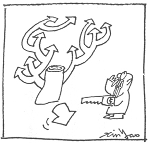
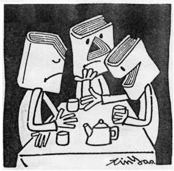

第九章 总结
现代医学不像大多数人认知的那么昌明
18世纪，西方发现了细菌，随后发明了抗生素，一举控制了瘟疫。从此奠定了西医权威的地位，同时也将西医的发展走向以微观证据为主的方向，所有医学的技术都朝向微小世界去寻找答案。为了在这个微小世界里找答案，因此发展出愈来愈精密的各种设备，这些设备的愈来愈进步，使人们也觉得医学愈来愈进步了。
经过了近两百多年的发展，到了20世纪末，在解剖学上，对于人体的各个部分，似乎都已经查清楚了，可是许多疾病的原因却仍然是个谜。也有许多的疾病虽然推断出了疾病的原因，可是依据这些原因所发展出来的医疗方法，并不能真正的把疾病去除。多数的慢性病，只能用药物控制，患者必须终生服药，而医生也很明白地告诉患者，这些药只能减缓疾病的恶化，并不能真正断除疾病的根。实际上除了细菌性的疾病和外科手术以外，西医能够完全治愈的疾病并不多。多数严重的疾病只能控制而不能治愈。
由于整体西医理论建立在解剖学的基础上，因此至今只有个别器官的学说，没有整个人体运行的完整理论模型。例如高血压就认为问题出在心血管，所有治疗完全着重在如何降压。糖尿病就认为问题出在分泌胰岛素的胰脏，就利用药物来平衡胰岛素的分泌。这些方法都建立在“人体会造成这些症状，必定是一种控制上的失误”的假设。这是一种完全忽视人体系统智能能力的逻辑。

在一知半解的身体上切切割割，必定带来更多的问题。
人体自身具有一个智能型的自动控制系统，这个系统很可能在发现人体有问题时，能自动调整各种系统的参数，克服这些问题所造成的影响。
例如，由于人体血液浓度改变，血管硬化等原因，使人体以原有的血压，无法将血液送到必须送到的地方时，人体会主动调高血压，来达到目的。也就是说，高血压的现象有可能只是人体的应变措施所造成的结果，它本身并不是一种疾病，而目前的治疗方法主要着重在调整血压，这只能防止血管因压力太大而破裂，并不能消除造成血压上升的真正原因，因此当然不能将之治好。找出人体采取应变措施的原因，消除这些原因，才是治病的根本之道。
1995年美国曾经出版一本书名为《还我健康（Reclaim to our health）》，揭开美国医学界的许多黑幕。其中对美国医师协会利用各种手段排斥西医以外医疗方法的研究和发展，以及美国医学界和利益团体之间的许多见不得人的事，都有很深入的描述。我曾从事投资工作多年，了解西方国家的许多医学研究经费都是由药厂投资的。这一点使我怀疑他们的研究是真的想把人们的疾病去除，还是只想控制疾病。目前西医的治疗方式是要求患者每天每餐都要吃药，许多疾病都必须终生服药，这是最符合药厂利益的。不禁让人怀疑医学界今日的困境是不是受到这些利益影响的结果。
在那本书中也提到很多这一类医学界轻人命而重利益的实例。最让人惊心的是癌症治疗的两种方法：放射性治疗（放疗）和化学性治疗（化疗）。书中提到放疗最早被用来治疗癌症的动机，完全是美国政府为了降低舆论反对其进行核能军事用途的研究而硬找出来的和平用途。然后透过政府和利益团体的力量，使这项治疗方法让保险公司列为合法的癌症治疗手段，保险公司愿意支付费用。从此这项方法虽然没有实际的证据证明真的能够治疗癌症，但是仍然是目前最主要的医疗手段。
化疗则是另一个类似的例子，开始时它所使用的药剂，是二次大战时的化学武器药剂。同样的也是在没有证据证明它有效的前提下，只要保险公司愿意支付，医院就会推荐患者使用。因为所有的医生都知道这两个疗法都不能治愈疾病，因此他们从不说明到底有多少治愈率，而是强调它1年或5年的存活率有多少。
书中还提到美国对这些放疗和化疗医生所做的问卷调查，问他们“如果他们自己或自己的家人得了癌症，愿不愿意接受他们经常替患者所做的放疗或化疗治疗？”调查的结果出乎意料，居然绝大多数的医生都不愿意，理由是他们自己没有见过真正被治好的患者，但是这些治疗所带给患者的痛苦实在是太可怕了。
每一个人环顾自己周围的亲人，总会发现在有限的亲友中，就有许多现代医学无法治愈的慢性病。例如失眠、痛风、坐骨神经痛、肌无力、关节炎、过敏性疾病、各种心脏病、高血压、骨刺（骨质增生）、肝炎带原、哮喘、硬皮症、尿毒症、糖尿病、各种癌症等，都是非常普遍的现代人疾病。再从另外的角度来看，几乎人体从头到脚每一个器官都有现代医学束手无策的疾病。这两点使我对现代医学昌明的说法有很大的怀疑，当然对西医的治疗，只着重控制，而没有能力治愈疾病的本质，更有深切的体认。
“中医现代化”不是“中医西医化”
中医和西医相反，从开始的理论就是用宏观的方式讨论人体的系统模型，从而发展出整套的医疗方法。但是其系统过于庞大，用西医微观的观点，很难立即提供直观的证据，因此一直被认为不科学。加上中国数百年来的弱国形象，使中医的地位在世界上一直无法建立。

分了科的中医就再也看不到完整的系统了。
近百年来，中国不断的在各个方面进行现代化，中医也不例外。由于现代化的主事者在开始时就先入为主地认为西医较中医为优。早期在二次大战期间的汪精卫伪政府，甚至还有废除中医的计划。因此中医现代化的工作，立足点采取完全否定中医，大胆引进西医的方法，用西医的分科，及西医的诊断方法来重新界定中医。
这种做法，与其说是“中医现代化”，不如称之为“中医西医化”来得贴切。这种牛头不对马嘴硬套的结果，使得中医完全失去了原有的优点。“头痛医头，脚痛医脚”是长期以来中医认定庸医的标准。但是中医现代化引进了西医的观点以后，西医和现代化以后的中医大多数用的是这个逻辑。
真正的中医面对疾病的态度和西医完全不同，首先必须很清楚地了解敌人是疾病，而人体的作战指挥部是人体内的自我治疗系统，不是外在的医生。外在医生的任务，首先是了解敌情和战况、人体自我治疗系统的工作方向及作战时可能的外在反应。其次是了解人体自我治疗系统能力薄弱的环节，在适当的时候给予必要的支持，扮演好后勤补给的角色。
同时适时地给予患者病情的解释，使患者了解自己身体的工作状况，配合人体自我治疗系统工作的需要，调整心理状况和生活作息，提供自我治疗系统最大的能量补给，做好安定患者情绪的工作。也就是外在的医生，实际上是人体内部医生的助手。
在中国大陆，我接触过许多中西结合的医生，他们多数满脑子西医的概念，开药时，中药、西药都开。最常见的做法是“西医的诊断，中医的处方”。这是最大的弊病，首先对于脏器的定义，中西医就有很大的不同。其次中医的诊断还必须经过各种逻辑的推演，如“四诊八纲”的辨证，才能找出生病的器官。
用西医头痛医头的逻辑诊断，开中医的药，是完全行不通的。例如，胃溃疡和十二指肠溃疡，在西医认定为胃或十二指肠的疾病，但中医却认为是肝和情绪的疾病。如果依照西医的诊断，开出治疗胃或十二指肠的中药，其结果当然不会理想了。
其实中医最重要的应该是诊断，透过望、闻、问、切的手段，对患者进行包括整个身体和从幼年到成年的生活习惯、心理状况以及近期的特殊事件等做全面性的了解，再依医生的经验进行整体的判断，找出病人真正的病因。只要诊断的方向正确，治疗就变成很简单的事了，可以有许多不同的治疗手段，都能对疾病产生改善甚至痊愈的效果。
严格说来中医现代化，并没有真正开始。例如，中医最讲究血气，可是至今没有任何仪器可以度量血气的多寡。其它虚症、实症更不用说了。
中医、西医结合的方式，应撷取中医在诊断上优异的分析逻辑，以及西医在仪器应用和数据化的各种检查手段，将中医的各种诊断仪器化和数据化，逐步验证中医的各种理论。